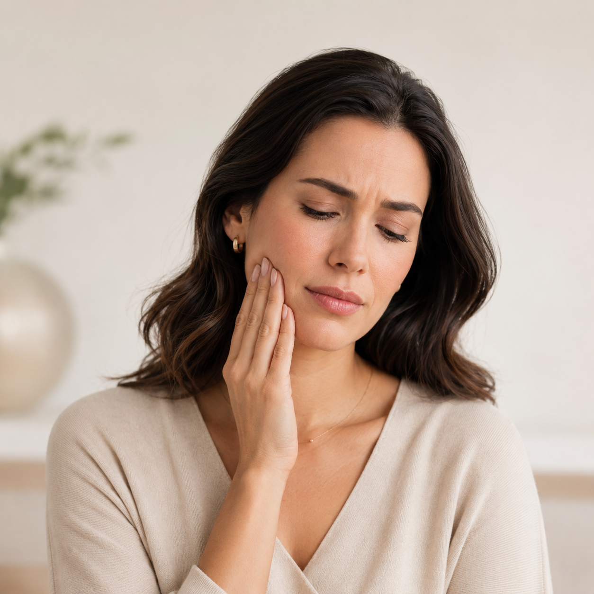
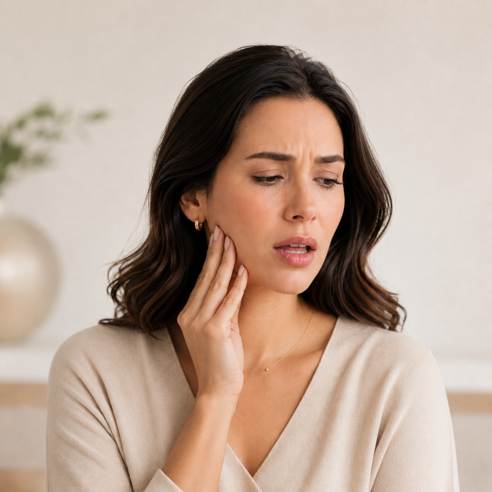
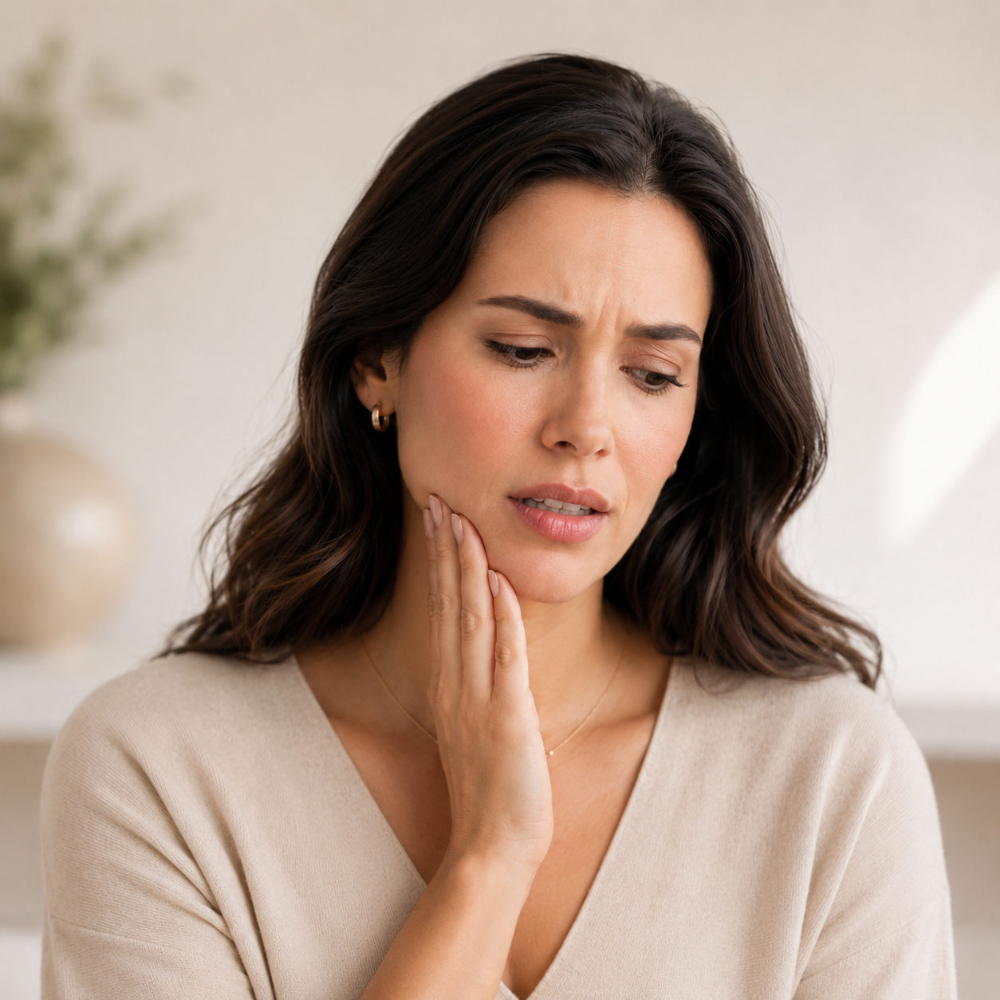
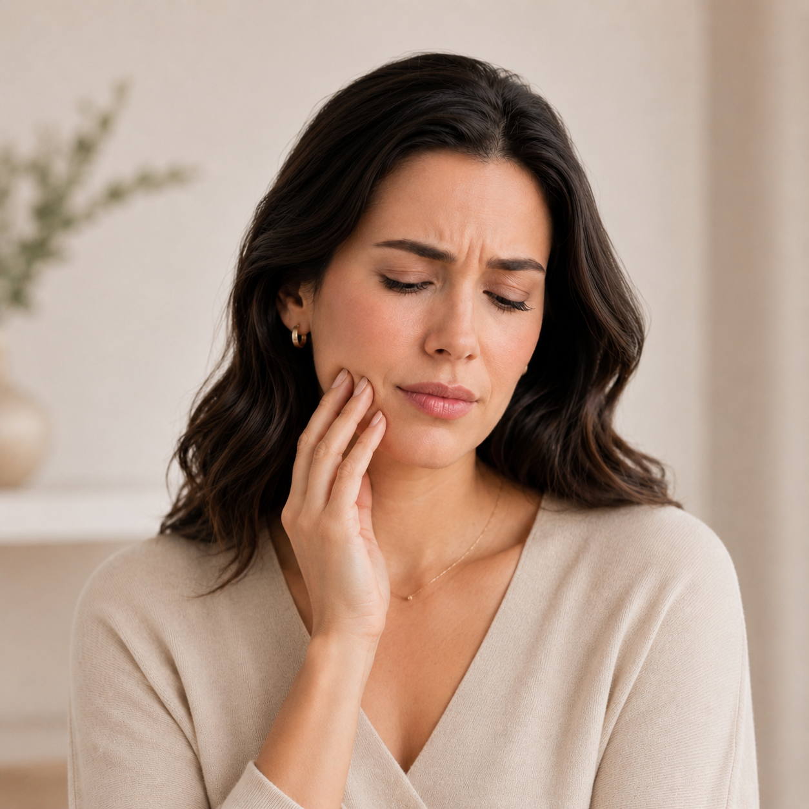
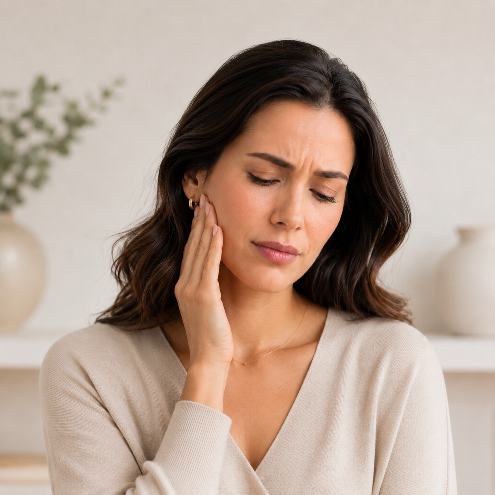
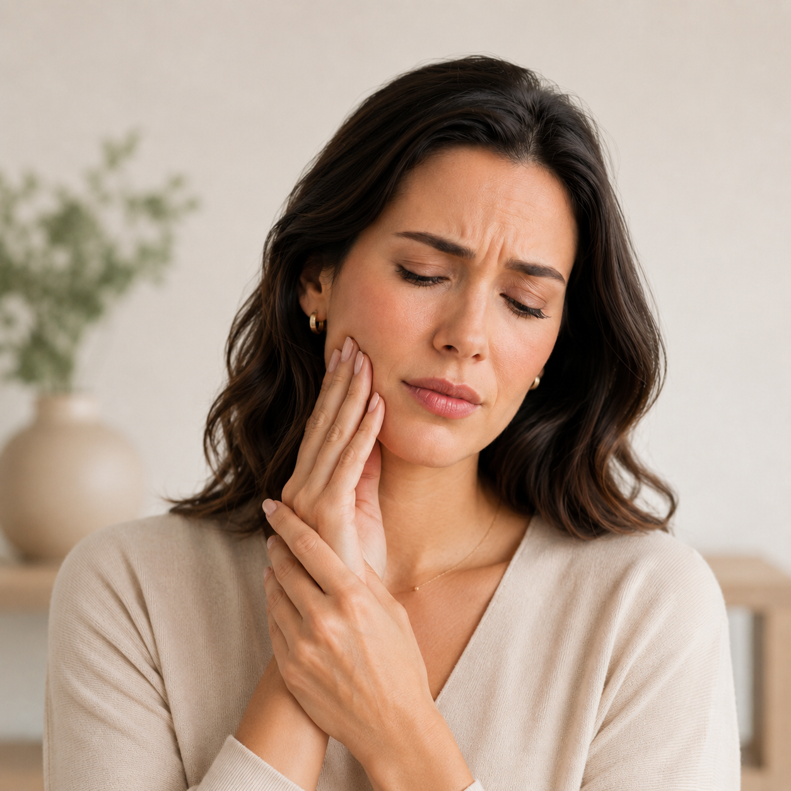

Atendimento em Teresina – Piauí
Dor na mandíbula, face ou cabeça pode ter relação com DTM
Atendimento odontológico para adultos e crianças, com foco em DTM, Dor Orofacial, bruxismo, apertamento dental e dores relacionadas à mandíbula, face e musculatura mastigatória.
Avaliação cuidadosa
Nem toda dor na face tem a mesma origem.
Dores na mandíbula, estalos, travamentos, bruxismo, dor facial e dor de cabeça precisam ser avaliados com atenção para entender a origem do desconforto e orientar a melhor conduta para cada caso.
Estalos, travamentos, dor ao mastigar, bruxismo e dor facial merecem avaliação especializada.
Sinais de atenção
Você sente algum desses sinais?
Alguns sintomas podem estar relacionados à DTM, dor orofacial, bruxismo ou apertamento dental. A avaliação clínica ajuda a compreender melhor cada situação.

Estalos ao abrir ou fechar a boca

Travamento da boca

Bruxismo ou apertamento dental
Dor de cabeça frequente

Dor na face ou perto do ouvido
Cansaço ao mastigar

Tensão na musculatura facial
DTM e Dor Orofacial
O que é DTM?
A DTM, ou Disfunção Temporomandibular, envolve alterações na articulação temporomandibular, nos músculos da mastigação e em estruturas relacionadas. Ela pode causar dor, estalos, limitação de movimento, sensação de travamento, dor facial, dor de cabeça e desconforto ao mastigar.
Dor orofacial precisa de avaliação cuidadosa
A dor orofacial pode ter diferentes origens. Ela pode estar relacionada aos dentes, músculos, articulação temporomandibular, hábitos como bruxismo e apertamento dental, ou outros fatores. Por isso, a avaliação especializada é importante para compreender a origem da dor e indicar a melhor conduta para cada caso.
Atendimento
Como o atendimento pode ajudar
O cuidado em DTM e Dor Orofacial envolve escuta, avaliação clínica, orientação e acompanhamento individualizado, sempre de acordo com a necessidade de cada paciente.
Avaliação clínica cuidadosa
Análise dos sintomas, histórico do paciente, hábitos, função mandibular e possíveis fatores associados à dor.
Investigação dos sintomas e hábitos
Identificação de sinais relacionados a bruxismo, apertamento dental, tensão muscular, estalos, travamentos e dores recorrentes.
Orientações individualizadas
Condutas e orientações adequadas ao caso, com foco em controle dos sintomas, função mandibular e qualidade de vida.
Controle do bruxismo e apertamento
Avaliação dos fatores envolvidos e indicação de estratégias para reduzir sobrecarga, desconforto e efeitos associados.
Placas oclusais quando indicadas
Recursos odontológicos podem ser indicados de forma individualizada, conforme avaliação clínica e necessidade do paciente.
Adultos e crianças
Atendimento voltado para diferentes fases da vida, com abordagem acolhedora, cuidadosa e adequada a cada idade.
Foto da Dra. Carine
Sobre a profissional
Dra. Carine Borges
Dra. Carine Borges é cirurgiã-dentista com atuação em DTM e Dor Orofacial. Realiza atendimento em Teresina – Piauí, voltado para adultos e crianças que apresentam dores na mandíbula, face, cabeça, bruxismo, apertamento dental, estalos, travamentos ou desconforto ao mastigar.
Seu atendimento busca compreender a origem da dor por meio de uma avaliação cuidadosa, com abordagem acolhedora, individualizada e baseada em critérios clínicos.
CRO-PI: inserir posteriormente
Contato
Sente dor na mandíbula, face ou cabeça?
Esses sintomas não devem ser ignorados. Agende uma avaliação com a Dra. Carine Borges e entenda se sua dor pode estar relacionada à DTM, bruxismo, apertamento dental ou dor orofacial.